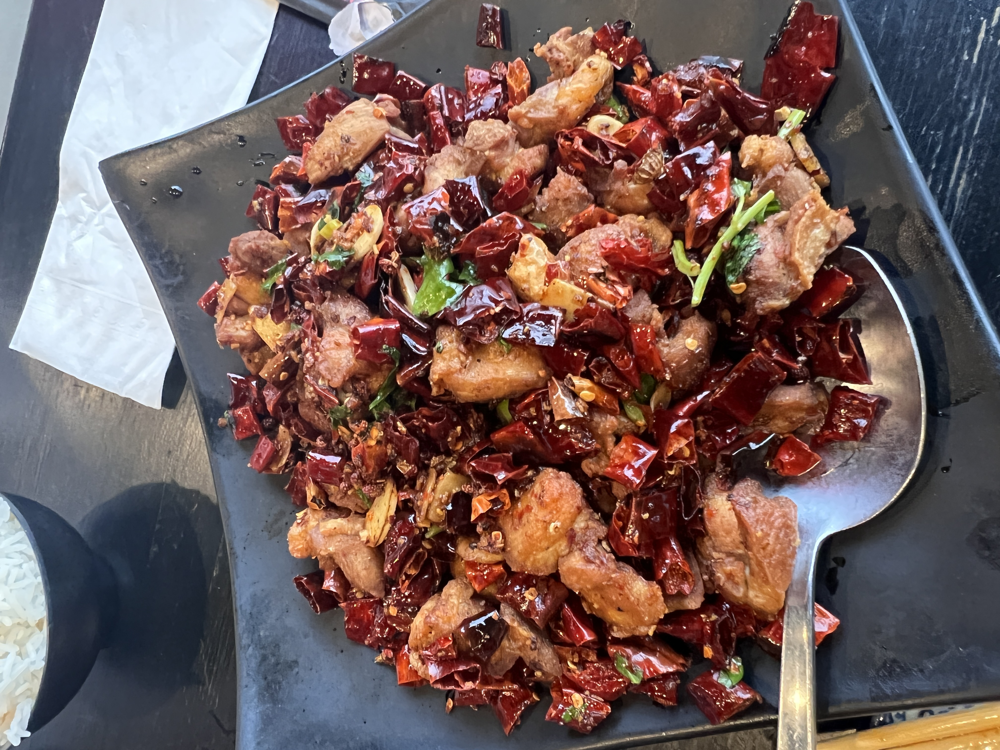

La Zi Ji

La Zi Ji is a spicy and flavorful Sichuanese dish made with crispy chicken pieces,
Sichuan peppercorns, dried chili peppers, and other seasonings.
Ingredients
- Half a Chicken (子鸡), ~850g. Ok, here you have a couple choices. First, the
proper way is to get a chicken and cut it up on the bone, into small 2cm pieces
(if you’re abroad and are working with those super-meaty mutant chickens, chop up
a bunch of wings for a similar effect). Second, if you really, really don’t want
those bones, feel free to use deboned chicken thigh cut into 2cm pieces
(changing the dish to ‘Lazi Chicken Cubes’) – I think the dish is best enjoyed
on the bone, but you’re the boss of your own chicken.
- Peanuts, 60g. Get some unroasted, unsalted peanuts. We’re gunna deep fry these so
they get nice and crispy, but if you're supremely lazy you could use roasted I suppose.
- Dried Sichuan Chilis (干辣椒), 100g. That ain’t a typo – this dish uses a metric fuckton
of chilis. You could probably go with even more than 100g to be honest. You’ll want to
use scissors to cut each chili into 3-4 parts and deseed them.
- Sichuan Chili Powder (辣椒粉), 3 Tbsp plus more to taste. Not all chili powders are created
equal – try to find a variety that’s nice and spicy. If you’re abroad, cayenne pepper powder
can absolutely work, but try to use a nice and decently fresh one. If it’s been collecting
dust in your cabinet, it’s not gunna be spicy enough for the dish.
- Sichuan Peppercorn (花椒), 7g. You could toast these if you like, but we’re not really
aiming for any obvious numbing effect here – these are mostly to balance the heat of the
chilis.
- MSG (味精), ½ tsp. Ah yes, MSG. People seem to fall into two camps regarding MSG: it’s
either the greatest thing in the history of mankind and should be in everything… or it’s
a completely awful thing that only terrible evil cooks that want to give you cancer use.
We stand squarely in the lonely center: we don’t like over-using MSG, but like all
ingredients it has its place. And what’s that place? With spicy food. It works really,
really well in conjunction with Chilis and Sichuan Peppercorns.
- Chicken Bouillon Powder (鸡粉), 1/8 tsp. Because we’re dredging and deep-frying the chicken,
this’ll ‘add back’ a little chicken flavor to the dish.
- Sugar, ½ tsp plus more to taste. We ended up with two teaspoons of sugar by the end here,
adding some sugar near the end of the cooking process.
- Salt, ¼ tsp.
- Garlic, 7 cloves. Crushed and roughly sliced.
- Ginger, ~2 inches. Roughly sliced.
- Cilantro (香菜), ~1.5 cups chopped; Green Onion (葱), ~2 cups chopped. Cut the green part
of the green onion into 2 inch long sections (ditto with the cilantro) and mince the
white part. Note that cilantro’s optional here. Most Laziji recipes will only use green
onion in the dish and might potentially garnish with cilantro. Our cook here Adam uses
cilantro in the dish, which isn’t super common for Laziji itself but is used a bit in
other dishes in the Sichuan ‘numbing-spicy’ flavor profile (麻辣味型). It’s also a really
tasty addition – more on that in the note below.
- White Sesame Seeds (熟芝麻). For garnish.
Ingredients for your Marinade:
- Light Soy Sauce (生抽), ~3 Tablespoons. The marinade is equal parts soy sauce and liaojiu
cooking wine. Just get enough marinade to completely cover your chicken – for us, this
was three tablespoons of each.
- Liaojiu (料酒), ~3 tablespoons. A.k.a rice cooking wine, huangjiu, or Shaoxing rice wine.
Feel free to be liberal with your potential substitutions here.
Ingredients for Dredging the Chicken:
- One egg.
- Cornstarch (生粉), ~1/2 cup. For our chicken, we used a batter of one egg and a half cup
cornstarch. The total amount of cornstarch might slightly depend on the size of your egg
though, so take a look at 2:05 in the video for the texture of the batter we’re looking for.
- Cut your chicken up into 2cm pieces, then marinate for at least three hours. If you’re outside
China, I’d personally opt for wings here – cleaving them across the bone into nice small 2cm
pieces. But because we live in China, we’re using a half a whole chicken… being super spoiled
and just having our vendor at the market chop it for us. I promise I'll forgive you if you're
opting for small cubes of deboned thighs. Marinate this in the soy sauce/liaojiu for at least
a couple hours, overnight is just fine too.
- Deskin the peanuts and deepfry them. Let the peanuts soak for 10 minutes in hot water, then take
the skin off. An easy way to take the skin off is to grab a small handful of peanuts and rub
them in between your palms (which we totally forgot to do in the video). Deep-fry your peanuts
in oil heated to 170 degree Celsius for about 2 minutes, until the peanuts are crisp and slightly
blistered. Set aside.
- Drain the marinade from the chicken, and dredge. Make sure you got most of the marinade out of the
chicken. Dredge with that combination of one egg and a half cup of cornstarch. Note that we aren’t
doing the western ‘coating and dipping’ method here – just mix everything well together with the
chicken.
- Deep-fry the chicken until crispy and golden brown, about 5 minutes. We’re aiming for oil that’s around 180
degrees Celsius (a little hotter is always safer). Make sure you don’t crowd the pot with too much chicken,
as that can drastically lower the heat of the oil – we actually did two batches to ensure nice, crispy
chicken. The batter has a tendency to clump together, so as you’re frying be sure to break apart any
stuck-together pieces with your spatula.
- Prep the rest of your ingredients, putting the cilantro and green-part of the green onion in an ice bath.
The next steps are gunna move quickly, so it’s helpful to get yourself organized. Toss your garlic and
ginger in a bowl, the sesame seeds and the minced white-part-of-the-green onion in a separate bowl, all the
spices (chilis, Sichuan peppercorn, chili powder, salt, sugar, bouillon and MSG) in a big bowl or plate, and
the cilantro and green-part-of-the-green onion in an ice bath.
- Stir-fry everything together. Get a wok piping hot and add a good glug (~1/4 cup) of oil. As with the last
recipe, let me give you guys a detailed, step-by-step timing with this stir-fry. This is just for reference,
so please don’t attempt to follow these exact times religiously – getting a relatively instinctual feel for
when to add in different ingredients actually comes pretty naturally:
- Garlic and Ginger, in. These will slightly deep-fry in your glug of ~1/4 cup of oil, 1 minute.
- Chicken, in. Stir for about 45 seconds.
- Spice plate, in. If on a Chinese range slightly lower the heat to make sure chilis don’t burn. Stir for
about 45 seconds.
- Peanuts, in. Stir for about 45 seconds.
- Season to taste. A peanut is a good barometer of how the taste’s shaping up. Often it might need more chili
powder, but we were good on heat so we just added an extra teaspoon and a half of sugar here. Stir for about
15 seconds.
- Heat back on high now - Cilantro and green-part-of-the-green onion, in. Flick a touch of ice water as the
greens are going in. Adam insists that the water hitting the hot oil causes a reaction that will crisp up
the chicken. The technique makes for a crispier chicken for sure, but I have my own hypothesis in the notes
below. Stir for one minute.
- Plate it up, garnish with the white-part-of-the-green onions and some sesame seeds.